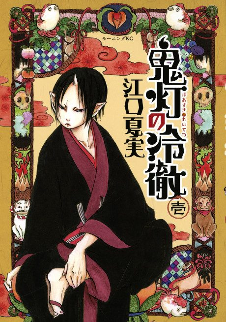

Hozuki's Coolheadedness
鬼灯の冷徹
The anime takes the story to Unclear.
7.4AniList score
—Animeter, no votes yet
39episodes, 3 seasons
Is it worth pushing through?
Built from what visitors report across all 3 seasons (39 episodes).
Loading reports…Checking what other people said about this one.
Sign in above with your email to add your report.